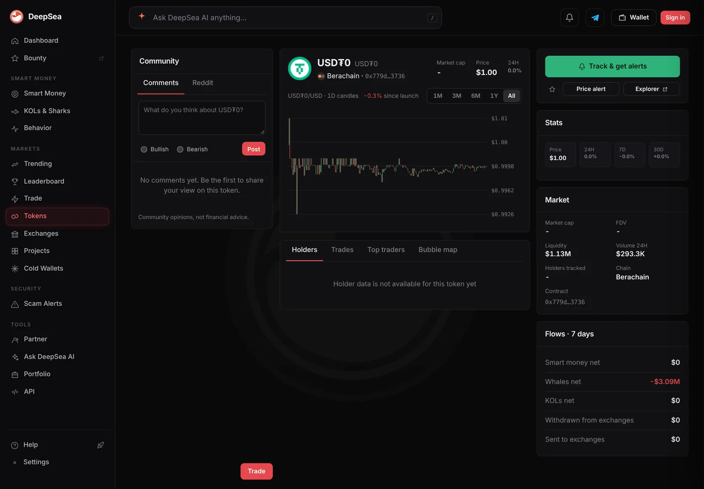
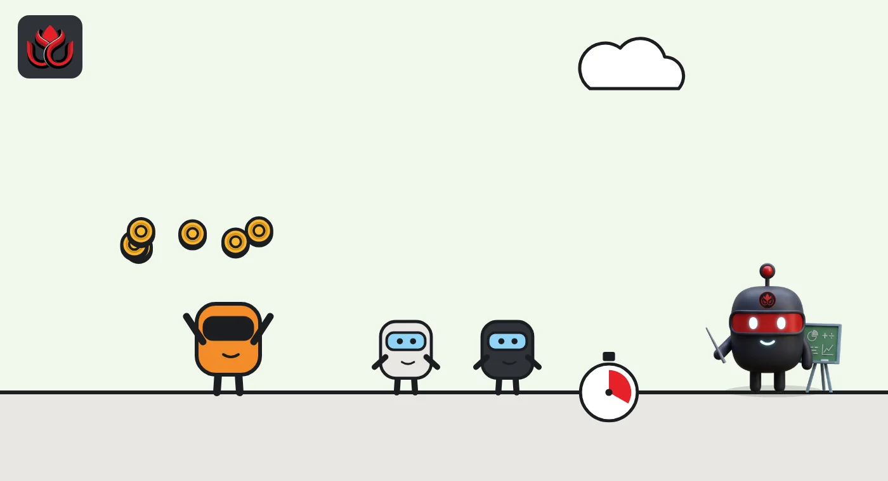

Sharks sold $9.52 million of USD₮0 on Berachain in a day, $3.39 million in the last hour
One busy wallet made 260 shark trades on Berachain, where DeepSea logged 263 in Tether's cross-chain dollar token. A day earlier the 24-hour selling was about a quarter of the size.
Key points
- In the 24 hours to 6:36 a.m. ET on November 5, 2026, three shark wallets sold $9.52 million of USD₮0 on Berachain and bought $7.78 million in 263 trades, DeepSea's live feed shows.
- One wallet, 0x3750...c318, made 260 trades on Berachain in that window: about $9.09 million sold and $7.78 million bought, across all tokens.
- In the last hour alone it sold $3.39 million and bought $38,807 in 13 trades.
 What DeepSea's data shows
What DeepSea's data shows
DeepSea's live feed adds up trades by wallets it tags as sharks (large, active traders). LC Insight read it at 6:36 a.m. ET on November 5, 2026. DeepSea does not name these wallets, so neither do we.
On Berachain, three sharks sold $9.52 million of USD₮0 over 24 hours and bought $7.78 million in 263 trades. That leaves about $1.74 million net sold. It was the biggest selling line in the feed's last hour: $3.39 million sold against $38,807 bought, all by one wallet in 13 trades.
That wallet, 0x3750...c318, did almost all of the day's work. Across every token on Berachain it sold about $9.09 million and bought $7.78 million in 260 trades. A second wallet sold $427,892 in a single trade. DeepSea's wallet totals are not split by token, and the token and wallet sums differ slightly.
DeepSea's USD₮0 token page for Berachain gives a seven-day view: whales net minus $3.09 million, with smart money and KOLs at zero.

Data: DeepSea (desea.io), checked November 5, 2026, 6:36 a.m. ET.
What is USD₮0?
USD₮0 is a version of Tether's USDT dollar token built to move between blockchains. It is meant to be worth $1, like USDT. Selling it for another token, or buying it back, is usually about moving in and out of dollars rather than betting on its price. CoinGecko showed USDT at $0.9994 at 6:39 a.m. ET.
Bigger than a day ago
The same wallet showed up in our November 4 report. At 6:35 a.m. ET on November 4, DeepSea's 24-hour count for USD₮0 on Berachain was $1.19 million bought and $2.46 million sold in 126 trades by one wallet. Twenty-four hours later the selling was almost four times larger and the trade count had doubled.
The wallet's record is modest next to its volume. DeepSea's realized profit table (closed trades only) puts it at +$18,947 over 30 days and +$15,576 over seven days.
USD₮0 shark trades on Berachain, 24 hours
US$ million
24-hour windows to 6:36 a.m. ET November 5 and 6:35 a.m. ET November 4, 2026. Source: DeepSea live feed.

Why it matters
Hundreds of trades in both directions look more like active trading or market making than a one-way exit. The hourly burst of $3.39 million is the part that changed the day's balance. The feed does not show what the wallet received for its USD₮0, so the motive is unknown.
LC Insight analysis
This section is our reading of the facts above, not a statement of fact.
- We think the 260 trades point to a trading strategy cycling dollars, not a holder cashing out. The net figure, $1.74 million, is small next to $17 million of two-way flow.
- One wallet drives this whole line. Berachain's shark data tells us about that wallet, not about the chain's users as a group.
- Read shark totals driven by one wallet as activity, not as a verdict on the token.
What's next
- Whether the wallet's hourly selling continues or flips back to buying
- Whether its 30-day realized result moves away from break-even
Disclaimer. This article is based on public information and the sources listed below as of the update time shown. It is for information only and is not investment, legal or tax advice. Figures may change as companies and authorities publish new data.
Sources
- DeepSea live feed, 1-hour and 24-hour shark aggregates (fetched November 5, 2026, 6:36 a.m. ET; comparison snapshot November 4, 2026, 6:35 a.m. ET)
- DeepSea, USD₮0 (Berachain) token page: 7-day flows (checked November 5, 2026, 6:48 a.m. ET)
- DeepSea, 7-day and 30-day realized PnL per tracked wallet (fetched November 5, 2026, 6:36 a.m. ET)
- CoinGecko, Tether (USDT) price (November 5, 2026, 6:39 a.m. ET)